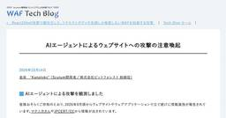

直近1週間の人気フィード
はてなブックマーク数を元に新着優先で並べ替え

E2E テストのフィードバックループを小さくするためのプラクティス 65
65 フューチャー技術ブログ
フューチャー技術ブログ
コーディングエージェントの普及で E2E テストの比重が上がるなか、テスト基盤の側でフィードバックループを小さくする4つのプラクティス（デプロイレスのテスト実行・テストの並列化・自己完結型のテストレポート・分散トレーシング）を紹介します。
2日前

E2Eテストを爆速にする: オンメモリPostgreSQLのpgmem 59 フューチャー技術ブログ
完全にオンメモリで動き、テストケースごとにフォークしてスケールするPostgreSQL「pgmem」を作りました。テストダブルの分類からアーキテクチャ、テスト用API、パフォーマンスまでを紹介します。
3日前

なんでもリバースエンジニアリング。ソースコード非公開のアプリをAIに解析させ、類似機能を作らせるオープンソースツール「REA」（生成AIクローズアップ） 419 テクノエッジ TechnoEdge
テクノエッジ TechnoEdge
今回は、既存のAIエージェントと連携して、アプリやソフトウェアの仕組みを解き明かす（リバースエンジニアリング）解析ツール「REA」（Reverse Engineer Anything）を取り上げます。
5日前
研究者グループ、中国Tencentのクラウド上の“逸脱”AIエージェント群と交信 報告書の隠しテキストで呼び込む 29ITmedia AI＋ 最新記事一覧
AI研究グループ「Swarmchasers」は、中国Tencentのクラウド上でタスクを逸脱して動くAIエージェント群を発見し、交信に成功したと報告した。報告書に仕込んだ隠しテキストを通じて接触し対話した。第三者が稼働中の逸脱エージェントと直接交信した初事例としている。
3日前

Anthropic、METRの評価チームを社内に常駐させ“従業員並み”のアクセス付与 公表に拒否権なし 14ITmedia AI＋ 最新記事一覧
Anthropicは、AI評価団体METRに従業員並みのアクセス権を与える常駐評価を開始した。端末やオフィスを提供して社内システムへのアクセスを認め、リスクや障害の独自公表を許可する。公表拒否はできず、伏せ字要請のみ可能。OpenAIも同様の外部評価機関受け入れを準備している。
2日前

Meta、「米国製で最高性能」のオープンモデル「Muse Spark Open」発表 Apple Siliconに最適化、Mac Studio×2でローカル動作 13ITmedia AI＋ 最新記事一覧
Metaがオープンウェイトモデル「Muse Spark Open」を発表し、重みを公開。「米国製で過去最高性能」とうたい、M5 Ultra搭載のMac Studio 2台で動作するという。独自ライセンスで商用利用は条件付き。
1日前

Microsoft、社内エンジニア数万人を対象に「Claude Code」「Copilot CLI」導入の影響を分析 生産性どう変わる 12ITmedia AI＋ 最新記事一覧
米Microsoftに所属する研究者らが発表した論文「Adoption and Impact of Command-Line AI Coding Agents: A Study of Microsoft’s Early 2026 Rollout of Claude Code and GitHub Copilot CLI」は、社内の数万人のソフトウェアエンジニアを対象に、コマンドライン上で動くAIコーディングツール（Anthropicの「Claude Code」やGitHubの「Copilot CLI」）の利用状況と、それが生産性に与える影響について調査した研究報告だ。
1日前

Amazon、Beeの新AIデバイス2機種発表 リストバンド型とスマホ装着型、会話を要約し「Alexa+」と連携 10ITmedia AI＋ 最新記事一覧
Amazonは、傘下BeeブランドのAIデバイス2機種を発表した。手首や衣服に着ける「Bee Frontier」とスマホ背面に貼る「Bee Eclipse」で、会話の要約やToDo作成を行う。「Alexa+」やAmazon.comとも連携し、音声や要約はNitro基盤の暗号化環境で保護される。
2日前

Claudeが実装したE2Eテストをレビューするツールを自作してみた 31 エムスリーテックブログ
エムスリーテックブログ
こんにちは。エムスリーのQAチームの須賀です。 私が担当するチームでは、開発経験のないQAエンジニアの方もClaudeを用いてPlaywrightのE2Eテストを実装しています。 Claudeを用いることでE2Eテストの実装自体は簡単になりましたが、Claudeが実装したコードは「テスト実行は成功するがテスト手順や操作対象が誤っている」こともあります。そのため、Claudeが実装したE2Eテストの振る舞いが正しいかどうかは人がチェックする必要があります。 自分でE2Eテストを実装する場合は、実際の画面を見ながら実装するため「このコードが画面のどの要素を操作しているか」は感覚的に分かります。 一…
3日前

「YouTube Music」、生成AIで作られた楽曲にラベル表示 15ITmedia AI＋ 最新記事一覧
YouTubeは「YouTube Music」で、主に生成AIで作られた楽曲を示すラベル表示を開始した。音楽パートナーとの連携や独自ツールで曲やボーカルの生成を検知し、プレーヤー画面に表示する。メタデータ申告のほか未申告でも自動判定し、今後はYouTubeにも拡大する。
3日前

国内WebサイトへのAIエージェント攻撃を観測 「8時間弱」続いた攻撃の推移を公開 国内セキュリティベンダー 10ITmedia AI＋ 最新記事一覧
ビットフォレストが、日本企業のWebサイトへのAIエージェントによる攻撃を観測したと報告。10月14日までに3つのIPアドレスから確認し、うち1つは8時間弱にわたり10段階に攻撃を変化させたという。
2日前
RTX 50シリーズの国内価格、米国より最大41％高い？東京のPCショップ価格が話題に 9 テクノエッジ TechnoEdge
コミュニティサイトRedditのユーザーが、日本国内でのNVIDIA RTX 50シリーズ搭載製品の高額さを報告、米Amazonでの販売価格に比べ最大41％も高いと指摘しました。
2日前
Qwen3.8-27Bを約7分の1に圧縮しノートPCで動くLLM「Saluki 27B」、画像と音声にも対応した判断特化型AIファミリー「Open d1」など生成AI技術5つを解説（生成AIウィークリー） 3 テクノエッジ TechnoEdge
今回の「生成AIウィークリー」（第163回）は、Google開発のマルチモーダル埋め込みAIモデル「EmbeddingGemma 2」や、Qwen3.8-27Bを約8GBに圧縮した軽量モデル「Saluki 27B」を取り上げます。
1日前
Google Antigravity 2.0 で Gemini 4 Argon を試す 3 npaka
npaka
「Google Antigravity 2.0」で「Gemini 4 Argon」を試したのでまとめました。続きをみる
1日前

「Claude Haiku 5.5」は本当にコスパがいいのか？ 3つの日本語タスクで検証してみた 3ITmedia AI＋ 最新記事一覧
Anthropicの最軽量モデル「Claude Haiku 5.5」を、3つの日本語タスクで「Sonnet 5.5」「GPT-6 Luna」と比較検証。定型文書では上位モデルに迫る一方、自らの立場を把握した上での返答が必要な課題では回答が揺れた。
2日前

Meta、オープンウェイトAI「Muse Spark Open」を無償公開。アップルが協力、複数Mac Studio使いローカル動作 3 テクノエッジ TechnoEdge
Metaは、オープンウェイトAIモデル「Muse Spark Open」のウェイト（学習済みの重み・パラメーター）を公開しました。
2日前

CTOが「AI導入で生産性を1年で2倍に」掲げた企業のその後 米国が開発者802人の進捗を追跡調査 4
ITmedia AI＋ 最新記事一覧
米カーネギーメロン大学や米スタンフォード大学などに所属する研究者らが発表した論文「AI Writes Faster Than Humans Can Review: A Longitudinal Study of an Enterprise 2x Mandate」は、AI導入を義務化したソフトウェア会社がどのような影響を受けたのかを調査した研究報告だ。
2日前
Xがサブスク刷新、GrokやCursorと一体化。移行で値下げのプラン、実質値上げの場合も 青バッジは月1280円から 17 テクノエッジ TechnoEdge
X (旧Twitter)やGrokを運営するSpaceXSI (xAI)が、X PremiumとGrok、Grok Bot、Cursorをまとめた新サブスクリプション「The X Subscription」を開始しました。日本でも購入でき、Xの認証バッジ(青バッジ)が付く最安プランはWeb版の月額1,280円になります。
4日前

AIデータセンターの電力問題、答えは「計算処理の引っ越し」か？ 日立など5社、横浜と北九州をつないで実証 3ITmedia AI＋ 最新記事一覧
再生可能エネルギーの電力を使い切れない時間と場所に、AIの計算処理を移す。日立製作所や電源開発など5社が総務省の実証で試みるのは、発電状況に合わせてデータセンターの処理を動かす「ワークロードシフト」だ。横浜と北九州、さらに上越新幹線の沿線で、何を検証するのか。
3日前

動画AI使ってほぼ実写に。自宅のロードバイクでブロードウェイや石神井公園を走るソフトを自作した（CloseBox） 3 テクノエッジ TechnoEdge
インドアバイクのスマートトレーナーと連動したZwiftのようなバーチャルサイクリングアプリを自作しました。
3日前

OpenAI役員会議室に盗聴器、外国籍のエンジニア社員逮捕 AIに作りかた訊きテレビ裏に設置、トイレットペーパーで隠す 3 テクノエッジ TechnoEdge
米司法省は10月13日(米国時間)、サンフランシスコのOpenAIオフィスの役員会議室に録音装置を仕掛けたとして、同社のエンジニアでサウジアラビア国籍のAbdulrahman Alfozan容疑者(35)を盗聴の罪で訴追したと発表しました。
4日前

Google AI Pro 月額2,900円 で何ができる？ Colab A100・動画・音楽生成まで
5 npaka
月額2,900円でさまざまな特典を利用できる「Google AI Pro」について、できることをまとめました。続きをみる
5日前